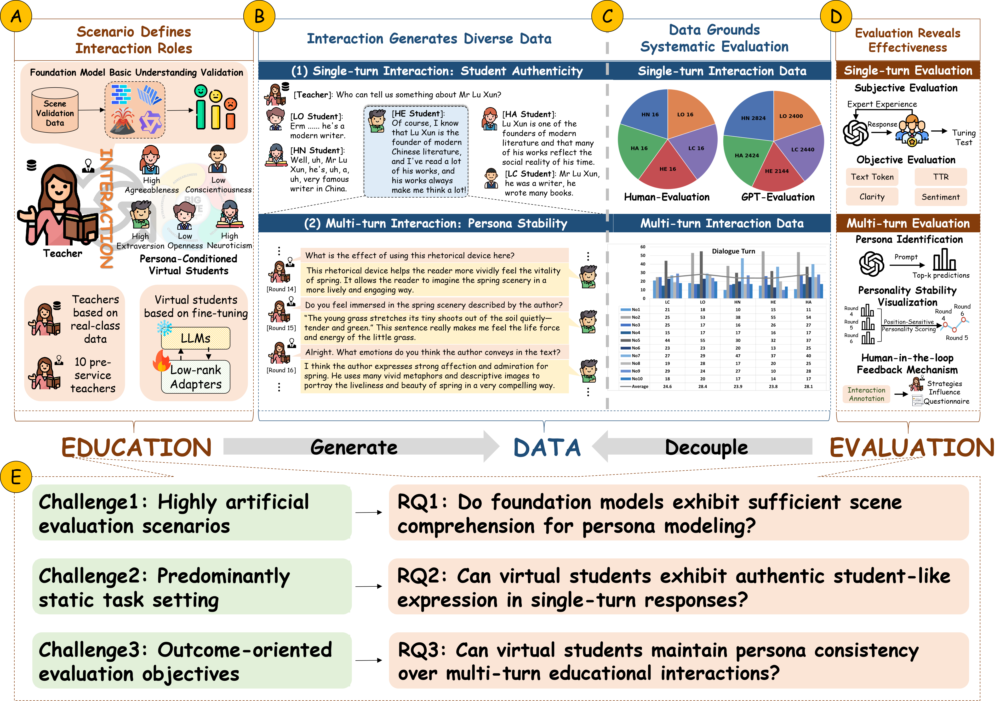
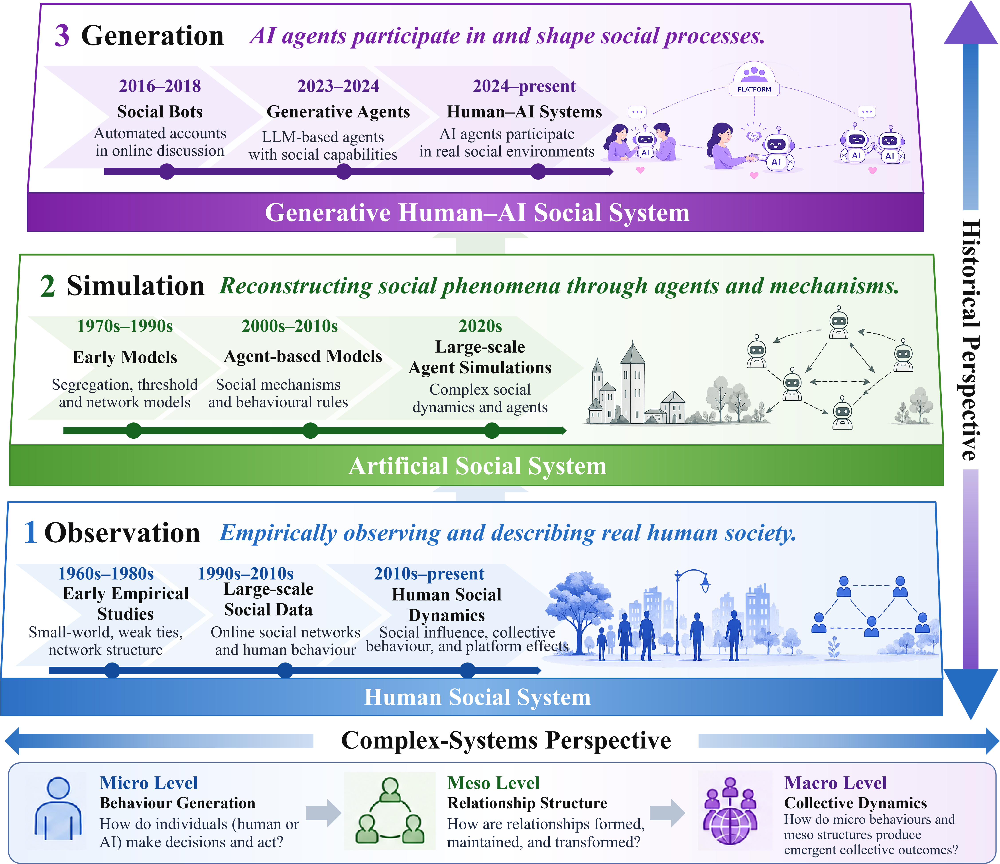
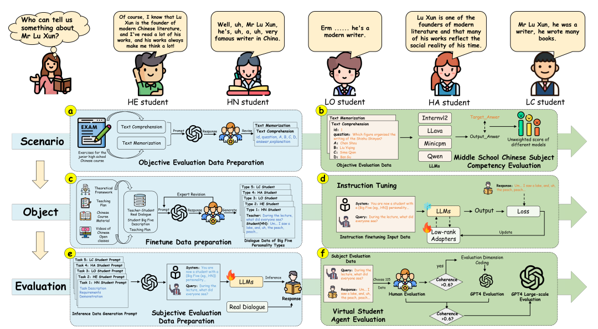
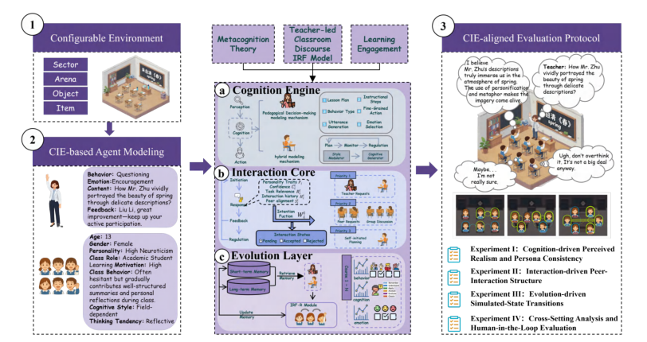
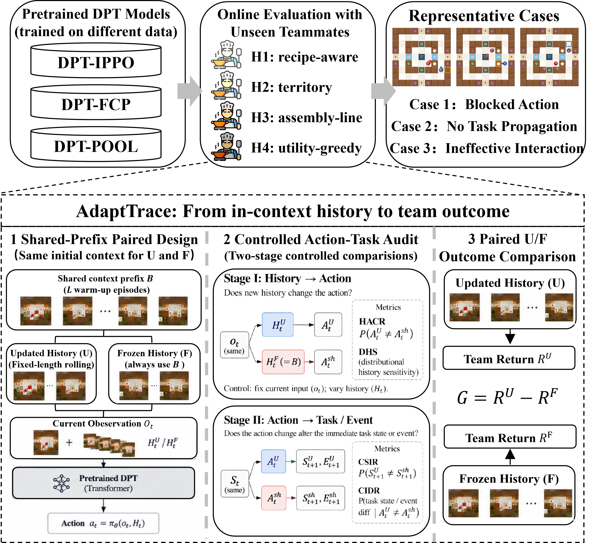
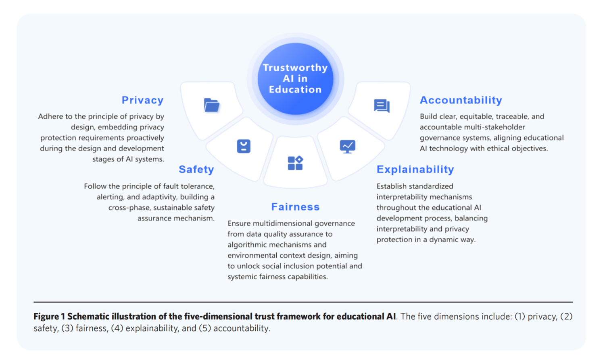
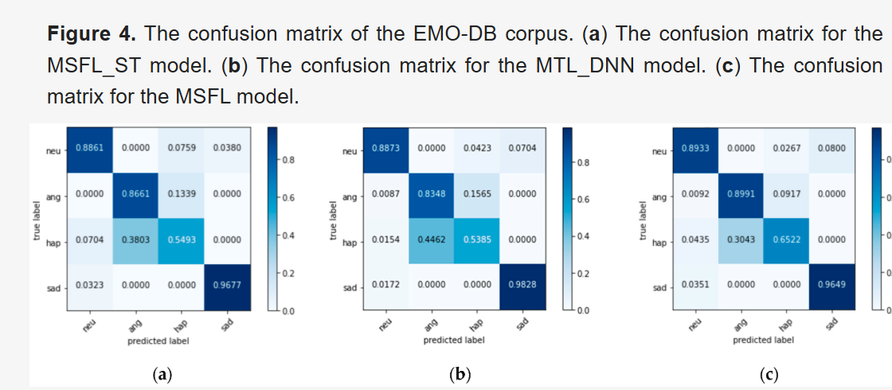
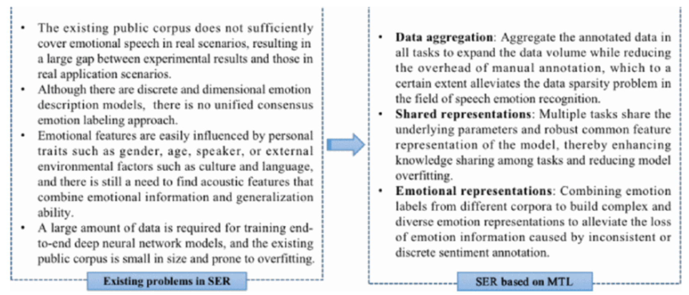

About
I am a Ph.D. candidate in Intelligent Education at the School of Computer Science and Technology, East China Normal University (ECNU), advised by Prof. Shiqing Liu from the Department of Education.
Since December 2025, I have undertaken joint Ph.D. training at the School of Physical and Mathematical Sciences (SPMS), Nanyang Technological University (NTU), co-supervised by Prof. Kang Hao Cheong. My work centers on educational agents, human-centered evaluation, and trustworthy generative human–AI social systems. I have also contributed to the preparation of an MOE Tertiary Education Research Fund proposal.
Research Outputs
Lead and First-Author Work
-
Minor revision

EduEval: An Evaluation Framework for Modeling and Validating Persona-Consistent Virtual Students
Pattern Recognition · JCR Q1 · Top Journal
-
Minor revision

From Observation to Generation: A Complex-Systems Perspective on Generative Human–AI Social Systems
Chaos, Solitons & Fractals · JCR Q1 · Top Journal
-
AAAI-Workshop

Learning to Be Taught: A Structured SOEI Framework for Modeling and Evaluating Personality-Aligned Virtual Student Agents
AI for Education Workshop at the 40th AAAI Conference on Artificial Intelligence · Workshop in CCF-A Conference
-
AAAI-Workshop

Redefining Educational Simulation: EduVerse as a User-Defined and Developmental Multi-Agent Simulation Space
AI for Education Workshop at the 40th AAAI Conference on Artificial Intelligence · Workshop in CCF-A Conference
-
Under review

AdaptTrace: Diagnosing History-Driven Adaptation in In-Context Reinforcement Learning for Ad-Hoc Teamwork
IEEE International Conference on Acoustics, Speech, and Signal Processing (ICASSP) · CCF-B Conference
-
Published

Trustworthy AI in Education: Framework, Cases, and Governance Strategies
Innovation and Emerging Technologies, Vol. 12, Article 2550026 · JCR Q2
-
Published

MSFL: Explainable Multitask-Based Shared Feature Learning for Multilingual Speech Emotion Recognition
Applied Sciences, 12(24), 12805 · JCR Q2
-
Published

Advances Research in Speech Emotion Recognition Based on Multi-Task Learning
4th International Workshop on Artificial Intelligence and Education (WAIE), IEEE, pp. 27–31 · Best Paper Presentation Award
Collaborative Work
-
AAAI-Workshop
EduPersona: Benchmarking Subjective Ability Boundaries of Virtual Student Agents
AI for Education Workshop at the 40th AAAI Conference on Artificial Intelligence · Workshop in CCF-A Conference
-
Published
From IM to PIM: Revolutionizing Influence Maximization with Personalized Seed Generation
IEEE Transactions on Mobile Computing, 25(8), 11854–11869 · JCR Q1 · Top Journal
-
Published
Educational Evaluation with MLLMs: Framework, Dataset, and Comprehensive Assessment
Electronics, 14(18), 3713 · JCR Q2
-
Preprint
-
Published
Simulation-Based Educational Practicum: A New Approach to Empower Pre-Service Teacher Training
Teacher Education Research (《教师教育研究》) · CSSCI Journal · Chinese-language journal
Research Projects
-
Principal Investigator
Intelligent Education Ph.D. Research Grant Project
From Collaboration to Integration: A Study on the Dilemma and Countermeasures of Human–Computer Interaction in Intelligent Education
-
North Carolina State University
GEARS Summer Research Program
Conducted a mentored machine-learning study on imbalanced blood-glucose prediction using support vector machines, feature ranking, cross-validation, and sensitivity-oriented evaluation.
-
Asian Education Leadership Program
Educational Leadership Study Program
Examined educational authority, leadership approaches, and adolescent emotional development through two case-based qualitative research projects.
-
Southern Cross University, Australia
ELICOS Program
Completed intensive English-language study with a Pass with Distinction.
-
Undergraduate Innovation Project
“Raspberry” Shared Bookhouse Mobile Application
Developed a campus application supporting online book rental and offline book exchange to improve the circulation and reuse of printed books.
Leadership & Engagement
-
Class Youth League Secretary · Intelligent Education, ECNU
Supports class organization, student communication, and collective activities for the Intelligent Education cohort.
-
Director, Academic Center · NNU School of Education Science
Concurrently served as Vice Chair of the Jiangsu Academic Alliance; organized academic forums and provincial student research activities, and led the center to receive an Outstanding Department distinction.
-
Video Production Intern · Chaoxing
Contributed to Tianjin University's laboratory-safety education animation series through scriptwriting and voice recording.
-
Vice Chair · Youth Media Center, Tianjin University of Sport
Oversaw the university Youth League's official social-media account and produced original content that repeatedly ranked among leading university accounts in Tianjin.
-
Youth Outreach Team · Tianjin University of Sport
Organized and participated in community outreach and public-speaking activities through the university's “Young Marxists” training program, receiving individual recognition for social practice.
Awards & Honors
- ECNU
Outstanding Communist Youth League Cadre, East China Normal University
- 2022
Best Paper Presentation Award, 4th International Workshop on Artificial Intelligence and Education
- 2021
Outstanding Student, Nanjing Normal University
- 2020
National First Prize, iTeach National Digital Education Innovation Competition